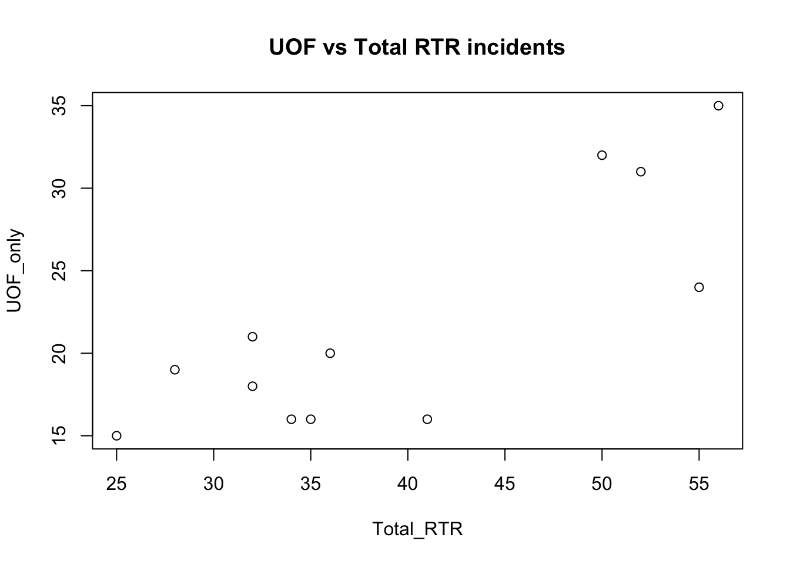
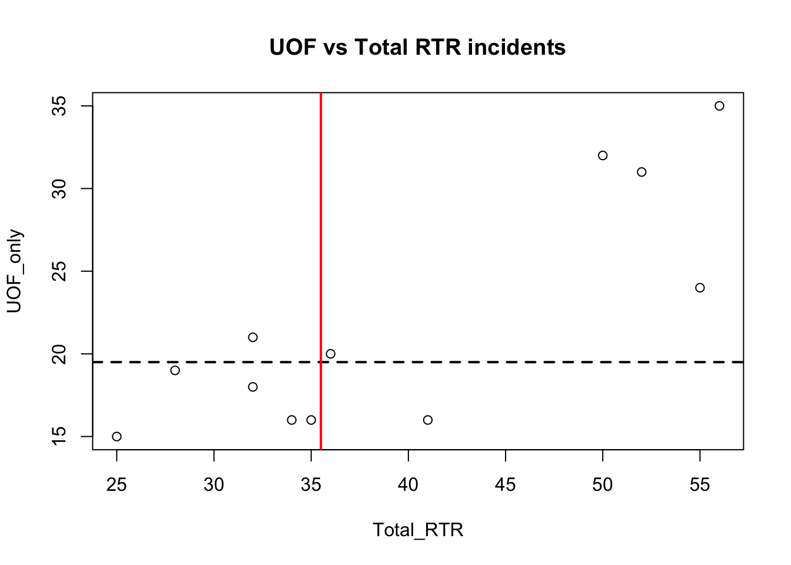
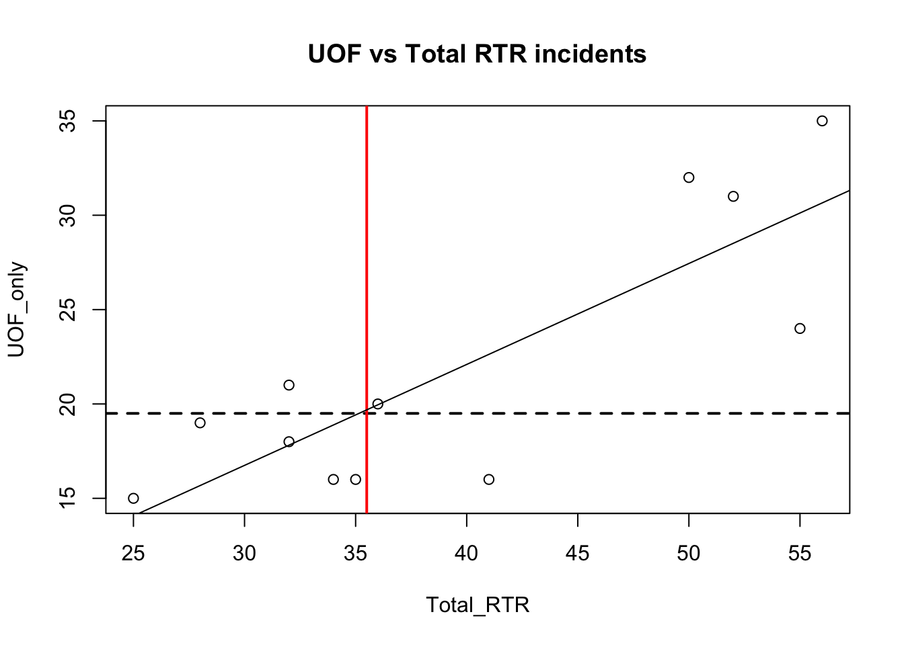
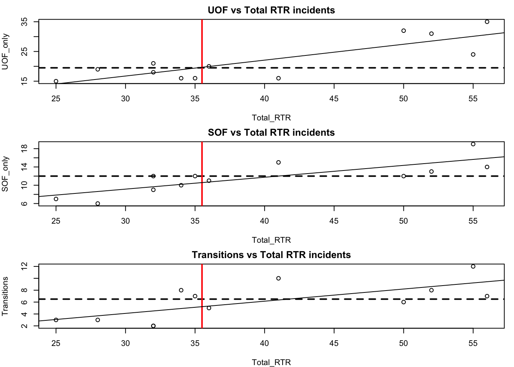
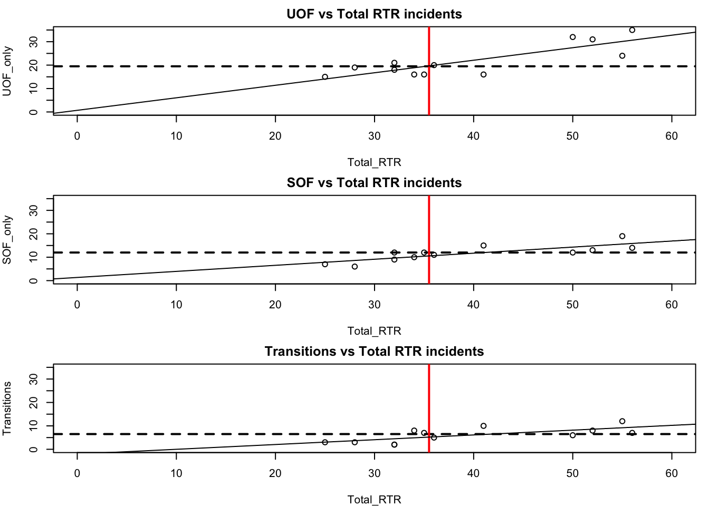

We’re going to start looking at how things relate to each other, which means we’re going to get into statistics.
If you’re interested in delving more into stats, I recommend this book as a good beginning: https://www.amazon.com/Statistics-Unplugged-Sally-Caldwell-ebook/dp/B00B6FKCWY/ref=mt_kindle?_encoding=UTF8&me=
By now you should be familiar with the idea of summaries and simple things like mean (average) and median. When we look at how things relate to each other, we’re looking for evidence of correlation. And the best way to do that is visually.
There are ways of just getting correlations with raw numbers, but those can be misleading. All of which is leading up to the real reason for this extended introduction: the datasaurus.
https://github.com/stephlocke/datasauRus
What the gif illustrates is a number of datasets, all with about the same mean, standard deviation and correlation. But when visualized, show very different results.
The point is, we want to vizualize our data. Load the readr library and then the dataset.
library(readr)
df <- read_csv("dfCrime.csv")## Parsed with column specification:
## cols(
## Year_Quarter = col_character(),
## year = col_integer(),
## quarter = col_character(),
## Total_CFS = col_integer(),
## Total_arrests = col_integer(),
## Total_RTR = col_integer(),
## SOF_only = col_integer(),
## UOF_only = col_integer(),
## Transitions = col_integer()
## )Now let’s use summary() to remind us of what the data is
summary(df)## Year_Quarter year quarter Total_CFS
## Length:12 Min. :2014 Length:12 Min. :18178
## Class :character 1st Qu.:2014 Class :character 1st Qu.:19663
## Mode :character Median :2015 Mode :character Median :21544
## Mean :2015 Mean :21341
## 3rd Qu.:2016 3rd Qu.:22753
## Max. :2016 Max. :24715
## Total_arrests Total_RTR SOF_only UOF_only
## Min. : 889.0 Min. :25.00 Min. : 6.00 Min. :15.00
## 1st Qu.: 947.8 1st Qu.:32.00 1st Qu.: 9.75 1st Qu.:16.00
## Median : 994.5 Median :35.50 Median :12.00 Median :19.50
## Mean :1013.2 Mean :39.67 Mean :11.67 Mean :21.92
## 3rd Qu.:1046.2 3rd Qu.:50.50 3rd Qu.:13.25 3rd Qu.:25.75
## Max. :1246.0 Max. :56.00 Max. :19.00 Max. :35.00
## Transitions
## Min. : 2.000
## 1st Qu.: 3.000
## Median : 6.500
## Mean : 6.083
## 3rd Qu.: 8.000
## Max. :12.000Three years with four quarters each of response-to-resistance (RTR) incidents from the Elgin police department. That’s broken down by the type of response - show of force only, use of force only and transition - show to use of force.
Now let’s generate a simple scatter plot
with(df, plot(Total_RTR, UOF_only))
title(main = "UOF vs Total RTR incidents")
with(df, sets up the plot, with the dataset to reference. Notice later we only have to put the names of the columns and not the full data$Total_RTR that would normally be used for a specific column.
plot( calls the plot.
Total_RTR, UOF_only are the two columns we want to compare.
title adds the title to the plot.
The result isn’t unexpected - the more total incidents there are, the more incidents involving use of force there are. Interestingly, there seems to be a leap in the number of incidents.
We can add some other things to help us understand the data a bit more.
with(df, plot(Total_RTR, UOF_only))
title(main = "UOF vs Total RTR incidents")
abline(h=median(df$UOF_only), lty=2, lwd=2)
abline(v=median(df$Total_RTR), lwd=2, col="red") 
abline adds lines to the plots, in this case at the point of the median values. You can probably work out what the code does by now: h and v are horizontal and vertical, lty is line type (in this case a dashed line) and lwd is the line weight. col is color.
There’s one more line we’re going to add, and that’s the regression or fit line.
with(df, plot(Total_RTR, UOF_only))
title(main = "UOF vs Total RTR incidents")
abline(h=median(df$UOF_only), lty=2, lwd=2)
abline(v=median(df$Total_RTR), lwd=2, col="red")
fit <- lm(df$UOF_only~df$Total_RTR)
abline(fit)
Notice how the fit line just about touches the point where the two median lines cross. If you changed those two lines to be mean instead of median, you would see fit and the means cross exactly.
That’s because the fit line is trying to represent the path of estimated average. Anything below the line is generally below average for that point, anything above is above average and anything on the line is exactly average.
We can find out alot about our data by looking at the fit.
summary(fit)##
## Call:
## lm(formula = df$UOF_only ~ df$Total_RTR)
##
## Residuals:
## Min 1Q Median 3Q Max
## -6.6299 -3.0193 0.5565 3.2192 4.5560
##
## Coefficients:
## Estimate Std. Error t value Pr(>|t|)
## (Intercept) 0.6987 4.6827 0.149 0.884360
## df$Total_RTR 0.5349 0.1142 4.684 0.000862 ***
## ---
## Signif. codes: 0 '***' 0.001 '**' 0.01 '*' 0.05 '.' 0.1 ' ' 1
##
## Residual standard error: 4.115 on 10 degrees of freedom
## Multiple R-squared: 0.6869, Adjusted R-squared: 0.6556
## F-statistic: 21.94 on 1 and 10 DF, p-value: 0.0008617There’s a lot to uppack here.
Honestly, I am not qualified to explain in detail these more advanced statistic measures. What follows is a very over-simplified explanation.
Look at the last three lines. Generally, you want …
HOWEVER: Don’t expect too much out of these stats - we’re using a very small dataset so it’s not going to be very informative and may even cause confusing results. Look at the portion labeled Coefficients:
This kind of exercise is most useful when you have a large number of items, like stats for all the elementary schools in a state.
Statistics is a science. Our purpose in graphing these values out is to see how the data relates to each other and maybe spot outliers. We will seldom use T values or R-squared in our stories.
But there’s nothing wrong in knowing about these things. And in fact understanding when it’s telling you that something’s wrong can be very useful.
Here’s a link to a resource explaining what you see with the summary https://feliperego.github.io/blog/2015/10/23/Interpreting-Model-Output-In-R
And the book I linked to in the beginning is very useful.
But generally, the closer your data is to that fit line, the more the two things you’re plotting are likely to correlate.
We don’t just have Use of Force numbers to compare to total RTR incidents, we also have Show of Force and Transitions from Show to Use. We can set up the plot window to show three charts at the same time using the par function.
par(mfrow=c(3,1),mar=c(4,4,2,1)) mfrow uses a vector of two numbers c(3,1) to set up the plot area to have three spots in one column. Play around with those two numbers to see how the plots fill in. The alternative command is mfcol
mar stands for margins, c(bottom, left, top, right). Number indicates the number of lines.
With that, we can add three plots, comparing the three categories to total RTR.
par(mfrow=c(3,1),mar=c(4,4,2,1))
with(df, plot(Total_RTR, UOF_only))
title(main = "UOF vs Total RTR incidents")
abline(h=median(df$UOF_only), lty=2, lwd=2)
abline(v=median(df$Total_RTR), lwd=2, col="red")
abline(lm(df$UOF_only~df$Total_RTR))
with(df, plot(Total_RTR, SOF_only))
title(main = "SOF vs Total RTR incidents")
abline(h=median(df$SOF_only), lty=2, lwd=2)
abline(v=median(df$Total_RTR), lwd=2, col="red")
abline(lm(df$SOF_only~df$Total_RTR))
with(df, plot(Total_RTR, Transitions))
title(main = "Transitions vs Total RTR incidents")
abline(h=median(df$Transitions), lty=2, lwd=2)
abline(v=median(df$Total_RTR), lwd=2, col="red")
abline(lm(df$Transitions~df$Total_RTR))
That’s pretty cool, but there’s a problem that makes comparing the three plots difficult. Take a look at the y axis (vertical). They’re different ranges. Let’s set a common range for the x and y axes.
par(mfrow=c(3,1),mar=c(4,4,2,1))
# Let's add the plot we already did
with(df, plot(Total_RTR, UOF_only,
xlim=c(0, 60), ylim=c(0, 35)))
title(main = "UOF vs Total RTR incidents")
abline(h=median(df$UOF_only), lty=2, lwd=2)
abline(v=median(df$Total_RTR), lwd=2, col="red")
abline(lm(df$UOF_only~df$Total_RTR))
# now SOF
with(df, plot(Total_RTR, SOF_only,
xlim=c(0, 60), ylim=c(0, 35)))
title(main = "SOF vs Total RTR incidents")
abline(h=median(df$SOF_only), lty=2, lwd=2)
abline(v=median(df$Total_RTR), lwd=2, col="red")
abline(lm(df$SOF_only~df$Total_RTR))
# finally, transitions
with(df, plot(Total_RTR, Transitions,
xlim=c(0, 60), ylim=c(0, 35)))
title(main = "Transitions vs Total RTR incidents")
abline(h=median(df$Transitions), lty=2, lwd=2)
abline(v=median(df$Total_RTR), lwd=2, col="red")
abline(lm(df$Transitions~df$Total_RTR))
The plot window in R studio may be too small to see the results well - click on “zoom” above the window and it’ll open up the graphic in a new window that you can adjust.
With all three plots on the same scale, we can see the difference between the three categories.
In part 2 of this tutorial on basic plots, we’ll introduce color as a way of differentiating the categories.